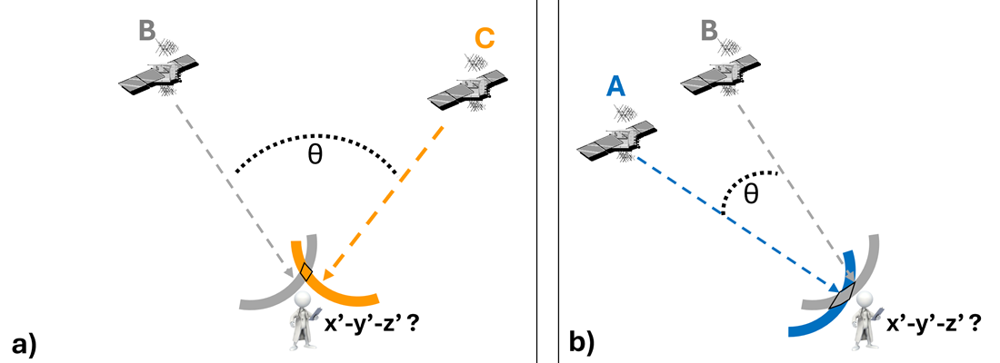
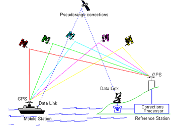
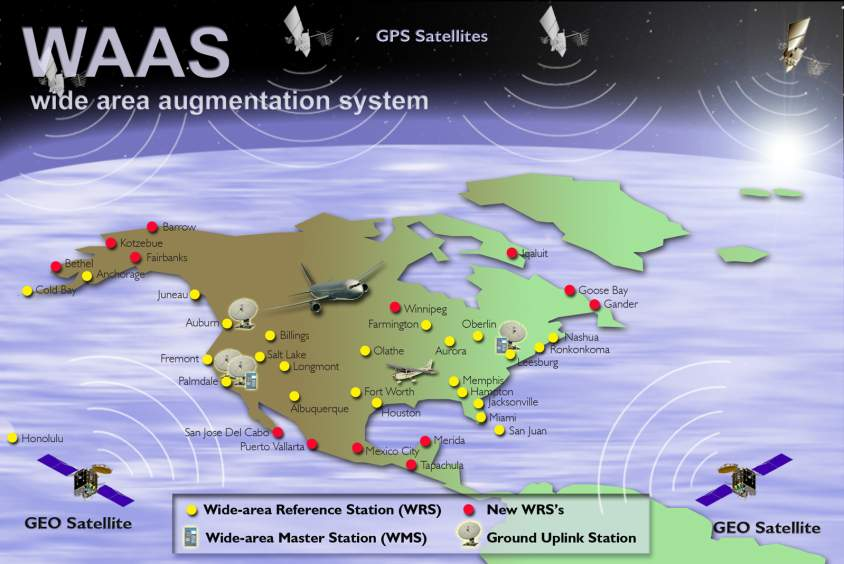

Learning Objectives
- Identify the main sources of GPS error
- Understand Dilution of Precision (DOP)
- Learn accuracy levels from recreational to survey grade
Error Sources
Several factors can affect GPS accuracy:
| Error Source | Typical Error | Description |
|---|---|---|
| Ionospheric delay | +/- 5 m | Signal slows through ionized atmosphere |
| Tropospheric delay | +/- 0.5 m | Signal slows through lower atmosphere |
| Satellite clock error | +/- 2 m | Even atomic clocks have small errors |
| Orbital errors | +/- 2.5 m | Satellite position uncertainty |
| Multipath | +/- 1 m | Signals bouncing off buildings/surfaces |
| Receiver noise | +/- 0.3 m | Electronic noise in receiver |
| PDOP (geometry) | Variable | Poor satellite geometry increases error |
Dilution of Precision (DOP)
DOP describes how satellite geometry affects position accuracy.
| DOP Type | What It Measures |
|---|---|
| PDOP | Position (3D) |
| HDOP | Horizontal position |
| VDOP | Vertical position |
| TDOP | Time |
| GDOP | Geometric (overall) |
DOP Quality Scale
| DOP Value | Quality |
|---|---|
| 1-2 | Excellent |
| 2-5 | Good |
| 5-10 | Moderate |
| 10-20 | Fair |
| >20 | Poor |
Good geometry: Satellites spread across the sky = Low DOP = Better accuracy
Poor geometry: Satellites clustered together = High DOP = Worse accuracy

Satellite geometry affects position accuracy: (a) large angle = better precision, (b) small angle = greater uncertainty.
Source: Hodgson, 2025 - GIS&T BoK
GPS Accuracy Levels
Recreational Grade (Standard)
- Accuracy: About 15 meters using just the main satellites
- Equipment: Smartphones, handheld GPS units, our Arduino builds
- Cost: Free to use
WAAS (Wide Area Augmentation System)
- Accuracy: Less than 3 meters
- How it works: Ground stations and extra satellites provide corrections
- Coverage: North America (vital for aviation)
- Equipment: WAAS-enabled GPS receivers
Mapping Grade
- Accuracy: Less than 1 meter
- How it works: Records raw signal for post-processing later
- Method: Compare with data from a base station
- Equipment: Professional mapping GPS units
Survey Grade
- Accuracy: Within 1 centimeter!
- How it works: RTK (Real-Time Kinematic) corrections
- Equipment: Expensive! ($15,000 - $30,000) plus subscriptions
- Use: Construction, property boundaries, infrastructure

Differential GPS (DGPS) uses a fixed reference station to calculate signal errors and transmit corrections to mobile receivers.

WAAS (Wide Area Augmentation System) uses a network of ground reference stations to calculate and broadcast signal corrections via geostationary satellites.
Summary Table
| Technique | Accuracy | Cost |
|---|---|---|
| Standard GPS (Recreational) | ~15 m | $ |
| WAAS/EGNOS | <3 m | $ |
| Mapping Grade (Post-Processing) | <1 m | $$ |
| Survey Grade (RTK) | 1 cm | $$$$$ |